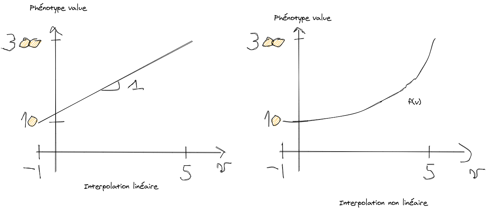

22/02/2021
version 1
Construire une bibliothèque que n’importe qui peut installer et utiliser dans ses propres projets informatiques. Cette bibliothèque est constituée d’un moteur (un ensemble de fonctions implémentant le modèle) ainsi que de données (avec un format bien défini) exportables et importables. Ainsi, les utilisateurs pourront partager leurs données entre eux (design du génome, des traits phénotypiques et des espèces) et une communauté pourrait se former construisant petit à petit des designs de plus en plus élaborés. L’idée c’est qu’on pourra construire à partir de ce qu’on a construit.
Pour permettre cela tout en étant user-friendly des éditeurs avec interface graphique seront développés :
Les 3 éditeurs permettront d’éditer, importer, exporter, dupliquer, supprimer, ces 3 type de données facilement. Ces données seront ensuite importées dans le projet informatique de l’utilisateur et celui-ci, après import du moteur, pourra faire tourner le modèle dans le but qu’il s’est fixé.
S’amuser. Fournir un moteur permettant de simuler des entités (biologiques ou non) possédant des caractéristiques (traits phénotypiques) interprétables par l’utilisateur. Ces caractéristiques sont le résultat de l’évaluation d’un support génétique (principalement). Les entités pourront se reproduire et transmettre à leur descendance une part de leur génome pour créer de l’hérédité, de la filiation (et de l’histoire). Ce génome pourra également être soumis à des mutations et évoluer. L’utilisateur pourra alors facilement simuler de la sélection et des populations au cours du temps dans son propre projet. Les espèces pourront muter, les populations évoluer etc. En somme un gros bac à sable. Ce modèle pourrait avoir des ambitions plus générales. Car s’il vise principalement à simuler de la vie, le moteur pourrait être appliqué à d’autres objets. On peut penser par exemple à faire une filiation de langues (en utilisant des méthodes de philologie comparée comme a pu le faire (sérieusement) Tolkien : utiliser des règles spécifiques de mutation qui permette de passer d’un mot ancêtre à un mot descendant et vice versa). En fait tout ce qui est sujet à itérations successives, tout objet qui« produit du nouveau a partir de lui même » pourrait être simulé.
La contrainte forte du modèle c’est qu’il faut définir à l’avance des traits phénotypiques auxquels l’utilisateur pourra donner du sens. J’insiste là dessus car le but est de pouvoir interpréter fonctionnellement le phénotype pour prendre des décisions. Ce que j’entends par là c’est que si une espèce possède un trait phénotypique qui renvoie la valeur ‘foo’ il faut que cette valeur puisse (pas nécessairement) avoir un sens pour l’utilisateur dans son programme. En ce sens, les traits phénotypiques doivent être définis dès le départ et le réservoir de phénotypes possibles doit pouvoir être contrôlé.
Le projet se compose des composants suivants à concevoir et développer :
Les structures de données seront complexes et un éditeur graphique pour les manipuler sera (quasi) indispensable. Ces éditeurs permettront d’importer et d’exporter les données facilement, de les éditer, dupliquer, supprimer. Le modèle est piloté par les données, ces structures sont capitales et doivent être manipulées et définies de manière rigoureuses.
L’utilisateur de la bibliothèque pourra faire évoluer des populations d’individus possédant un phénotype, ou un ensemble de traits observables et mesurables. L’utilisateur pourra évaluer les traits de chaque individu et leur appliquer le traitement qu’il souhaite. Ces traits seront l’expression d’un génome diploïde porté par chaque individu, transmissible par reproduction ou clonage de génération en génération.
Le support génétique (encodé en binaire) lorsqu’il est évalué produit une valeur. Cette valeur est ensuite interprétée par une feature qui produit à son tour une valeur auquel l’utilisateur donne une unité de mesure. L’expression de la feature est alors remontée dans le phénotype, le résultat de l’évaluation de toutes les features de l’individu. La valeur en sortie d’une feature peut servir d’entrée à une autre feature et ainsi de suite. Ainsi, le phénotype forme une collection de couples clé:{valeur, unité} produite par l’évaluation d'un réseau de features (possiblement) interdépendantes, fondé sur un support génétique.

Lors de la reproduction ou du clonage, le support génétique est transmis à l’aide de mécanismes connus de la biologie (mais nécessairement simplifiés) : mitose, méiose.
Le support génétique pourra être exposé à des mutations. Chaque individu disposera en plus de son support génétique d’un état interne modélisant les effets épigénétiques. Cet état supplémentaire, non encodé dans le génome, pourra modéliser la transmission de caractères acquis.
Un support génétique est une séquence en binaire (de 0 et de 1) qui peut être évalué pour produire des valeurs entières.
| Support génétique | |||
|---|---|---|---|
| Paramètre | Description | Type | Contraintes |
| Nom | Un nom donné au support | String | Unique |
Nombre de gènes N |
Nombre de gènes contribuant à la valeur du support | Integer | \( N \ge 1\) |
Nombre de bits n |
Nombre de bits sur lequel est encodé chaque gène du support : l’utilisateur pourra choisir d’encoder des gènes sur des structures allant de 1 à 8 bits (limite arbitraire). Ce paramètre défini par défaut le nombre de variations d’un même gène (allèles) accessibles. Par exemple, sur un support à 2 bits on a 4 valeurs possibles : 00 (0), 01 (1), 10 (2) et 11 (3). On a donc, au maximum 4 allèles pour ce gène dans notre « réservoir ». Sur 8 bits on a 256 valeurs possibles, donc 256 allèles possibles pour un même gène. La structure binaire est suffisante pour créer assez de variations (pas besoin de 4 caractères AGCT). | Integer | \( 1 \le n \le 8 \) |
| Rareté d'une allèle \(r\) | Sur les allèles disponibles on peut définir une rareté, un nombre qui sert au moment de la génération de populations. Ce nombre permettra de définir chance qu'un individu généré (non issu d'une reproduction) porte cet allèle initialement. | Float | \( 0 \le r \le 1 \) |
Allèles disponibles na |
Le réservoir d'allèles disponibles est par définition définie par le nombre de bits sur lequel est encodé un gène. L’utilisateur pourra décider de n’utiliser qu'un sous-ensemble de ce réservoir s’il le souhaite. Une allèle est une valeur possible d'un gène. Elle peut donc muter dans l'espace défini par le gène vers une autre valeur. | (Integer...) | \( 1 \le n_a \le N^{2} \) |
Relations entre allèles U |
Tableau de coefficients dont chaque valeur permet de calculer la contribution de chacune des 2 allèles du même gène à l’évaluation du support génétique. L’utilisateur pourra générer ces coefficients de manière aléatoire ou suivant des règles prédéfinies, ou les écrire manuellement (il y a toujours le contrôle total si on le souhaite). | [Float] | \( n_a(n_a+1)/2\) coefficients nécessaires pour évaluer toutes les combinaisons possibles, voir ce tableau |
Pour résumer, l’évaluation d’un support génétique (et la production d’une valeur) se fait en évaluant pour chacun de ses gènes la paire d’allèles (une allèle sur chaque chromosome homologue) correspondante. Les relations entre allèles permettent de calculer la valeur du support génétique.
Plusieurs relations entre allèles existent. Le modèle se propose de modéliser 3 d'entre elles :
Voici un tableau résumant les valeurs prises par les coefficients pour chaque type de relation entre allèles, ainsi que le résultat de l'évalution d'un gène \(A-B\). L'évaluation produit un ensemble clé:valeur noté \( \{ A: w_A , B: w_B \} \) où \(A\) est l'identifiant de l'allèle A et \(w_A\) son poids dans l'expression du gène. Si le poids est nul l'allèle n'est pas exprimé, s'il est égal à 1 on écrira \( \{ A: 1 \} \equiv \{ A\} \equiv A \). S'il n'y qu'un gène on pourra écrire \( \{ A\} \equiv A \)
| Supports génétiques | ||||
|---|---|---|---|---|
| Relation | Valeurs du coefficient | Evaluation | ||
| Dominant/Récessif | \(u(A,B) \in \{0 , 1\}\) | \( A \) ou \( B \) | ||
| Dominance incomplète | \(u(A,B) \in \left]0:1\right[\) | \( \{ A: u(A,B) , B: 1-u(A,B) \} \) | ||
| Codominance | \(u(A,B) = -1\) | \( \{ AB: 1 \}\) | ||
| Allèle inerte \(A\) | \(u(A,B) = 0, \forall B\) | \( \{ B: 1 \}\) | ||
| Allèles inertes \(A\) et \(B\) | \(u(A,B) = u(B,A) = 0\) | \( \{ \}\) | ||
Pour le moment aucune valeur n'est assignée à chaque allèle, sa valeur est son code binaire (ou son nom qui est un alias pour ce code). La valeur et le sens seront défini au niveau d'une feature.
Prenons un support génétique :
Initialisons le tableau des relations entre allèles :
| A | B | C | D | |
| A | 1 | 0.3 | 0.7 | 1 |
| B | - | 1 | 0.2 | 0.4 |
| C | - | - | 1 | 0.5 |
| D | - | - | - | 1 |
On a par définition
$$u(A,B) = 1 - u(B,A) $$si A et B ne sont pas codominants. Pour le cas de codominance on a défini une valeur arbitraire
$$u(A,B) = u(B,A) = -1 $$On peut noter que l'allèle D est récessif vis à vis de A qui est dominant. Dans tous les autres rapports d'allèles nous sommes dans un cas de dominance incomplète. Évaluons à présent un individu qui posséderait un support génétique initialisé comme suit :
$$(a-b)(c-b)(a-d)$$L’individu est hétérozygote pour chacun des 3 gènes. L'évaluation du support génétique donne
$$ v = \{ A:1.3, B:0.9, C:0.8 \}$$On peut voir que si le support génétique est constitué de plusieurs gènes il suffit d'ajouter les contributions de chaque gène.
Reprenons le même support génétique :
Construisons un autre tableau de relations entre allèles :
| A | B | C | |
| A | 1 | -1 | 1 |
| B | - | 1 | 0.5 |
| C | - | - | 1 |
Évaluons à présent un individu qui posséderait un support génétique initialisé comme suit :
$$ (C-B)(A-C)(A-B) $$L’individu est hétérozygote pour chacun des 3 gènes. L'évaluation du support génétique donne
$$ v = \{ AB: 1, A:1, B:0.5, C:0.5 \}$$Les allèles A et B sont codominantes, elles s'expriment donc toutes les deux mais leurs effets ne se combinent pas, elles produisent une nouvelle valeur \(AB\), un nouveau phénotype.
Une fois définis des supports génétiques on peut commencer à designer le composant à l'étage du dessus : la feature. Une feature est un trait (un phénotype) observable au niveau de l'individu. Jusqu’ici on a seulement parlé de support génétique dont l'évaluation produit des valeurs. C’est donc à ce niveau qu’on va donner un sens aux valeurs générées par le support génétique. La feature produit une observable que l'utilisateur va définir.
L’intérêt de découpler la production de valeur par un support génétique de son interprétation c’est qu'ont peut réutiliser un même support pour plusieurs features (dans différents projets) et redéfinir l'interprétation que l'on fait de sa valeur.
La feature est une fonction qui va prendre en entrée la valeur d'un support génétique, ou d'une autre feature, et retourner un phénotype, c'est à dire, une valeur et (possiblement) une grandeur et une unité de mesure. C'est une fonction au sens mathématique du terme : à chaque valeur de l'ensemble de départ (valeurs du support génétique) elle produira une valeur (ici un couple {valeur, unité}) dans un ensemble d'arrivée (valeurs du phénotype).
Le point important c'est qu'une feature ne possède pas d'état interne. Elle prend des valeurs en entrée et renvoie des valeurs en sortie. Les même valeurs en entrée produisent les mêmes valeurs en sortie. Elle n'a aucun effet de bord, c'est à dire que lorsqu'elle est évaluée elle ne modifie pas l'état du monde (exception faite des features attachées à l'état épigénétique). En d'autres termes ce sont des fonctions pures. L'état d'un individu est complètement encodé dans ses supports génétiques et son épigénetique. L'ensemble des features vient agir comme une fonction qui prend cet état et renvoie un phénotype macroscopique.

Pour définir l'évaluation d'une feature, lui donner sens, nous allons avoir besoin d'
L'unité de mesure servira à faire de l'analyse dimensionnelle et valider la cohérence de certaines expressions. Elle pourra servir à faire des conversions automatiques. Par exemple si un phénotype représente une taille, on pourra demander à évaluer cette valeur en 'cm', en 'm' sans avoir besoin de faire la conversion nous même.
A noter : l'utilisateur s'il souhaite avoir directement accès à la valeur du support génétique peut le faire, il peut demander à la feature de retourner directement la valeur du support. L'utilisateur pourrait lui donner une valeur (et une dimension, et unité de mesure) dynamiquement durant l'execution de son programme. Par exemple, regardons ce pseudo code d'un utilisateur qui utilise notre bibliothèque dans son projet
| Feature | |||
|---|---|---|---|
| Paramètre | Description | Type | Contraintes |
| Nom | Un nom donné à la feature | String | Unique |
| Source | D'où proviennent les entrées de la feature | Support Génétique ou (Features...) | Unique si support, MAX(à définir) si features |
| Output | Données en sortie de la feature | Ensemble {clé:valeurs},Object |
Doit respecter le schéma {valeur: Object, dimension: String, unit: String}. Ajouter peut être une contrainte sur le schéma de value
|
| Input | Données en entrée de la feature.
|
Ensemble {clé:valeurs},Object |
|
| Log | Historique de toutes les valeurs générées par la feature. A chaque évaluation, si l'évaluation est différente de la précédente valeur on la log. | Stack (Last in First Out) { t: {valeur, dimension, unit}}, tableau d'Object | Aucune |
Quand j'écris une valeur phénotype c'est assez général, on n'impose rien sur le type de retour d'une feature [a voir en fonction du design général], mais en général on peut faire retourner à une feature ce qu'on veut. Ce sont là plutot des questions techniques, savoir s'il faut fabriquer des types de données à respecter pour assurer une architecture robuste. Ces restrictions viendront au fil de l'eau, par défaut, une feature peut renvoyer n'importe quelle valeur.
La première étape est donc de maper (d'associer) à chaque allèle exprimée du support génétique une valeur. Comme les allèles sont définies au niveau du support génétique on peut facilement proposer une liste de valeurs à maper à l'utilisateur. On peut associer à la valeur de l'allèle n'importe quelle valeur de notre choix
Prenons un exemple de valeur produite par le support génétique encodé sur 3 gènes
$$(c-B)A(A-B) $$qui est évalué à
$$ S =\{ AB: 1, A:1, B:0.5, C:0.5 \} $$ On doit proposer à l'utilisateur d'associer à chaque allèle une valeur. Prenons \(A\), voici les possibilités :On pourra évidemment proposer ici de mapper des valeurs de manière automatique (pattern, aléatoire etc..)
On pourrait imaginer ne pas contraindre l'utilisateur à définir la valeur de chaque allèle. Ainsi, une valeur non mappée aurait une valeur assignée par le système, par exemple unknown.
x = evaluate(individu, feature) // acceder au phénotype retourné par la feature
//Allèle inconnue (mutation, non définie par l'utilisateur)
if(unknown(x)){
//Do stuff
valeur = ....
// retrouve l'allèle unknown et lui assigne valeur,dimension, unité
setValue(feature, 'valeur', dimension, unité)
}
Nous reviendrons sur la possibilité de tomber sur des allèles dont l'évaluation est inconnue dans la section mutations
Dans le cas d'un support encodé sur un seul gène, la question ne se pose pas, on retourne la valeur mappé à la valeur qui s'est exprimée.
Comme dans notre exemple, dans ce cas plusieurs stratégies d'interprétation peuvent être définies par l'utilisateur. On peut :
On peut proposer des stratégies de map au lieu de map indivduellement chaque allèle.
Si et seulement si l'utilisateur map chacune des allèles à un nombre (entier ou décimal) on peut proposer à l'utilisateur d'en faire un combinaison linéaire se servant du poids caractérisant la contribution de chaque allèle. Par exemple ici, définissons cette association :
On peut facilement fabriquer de la variation continue en faisant la combinaison linéaire de l'expression de chaque allèle
$$ \frac{1}{3} (v_{AB} + v_A + 0.5v_B + 0.5v_C) $$en utilisant le poids de l'expression de chaque allèle. La feature sera évaluée ici à \(1\)
L'évaluation en combinaison linéaire d'un support génétique encodé sur \(N\) gènes est donné par $$ V = \frac{1}{N}\sum_{i=1}^{N} u(i_a,i_b)v_a + (1-u(i_a,i_b))v_b $$ Soit $$ V = \frac{1}{N}\sum_{i=1}^{N} u(i_a,i_b)\left[v_a -v_b\right] + v_b $$avec \(i_a\) et \(i_b\) les allèles a et b du gène \(i\).
L'utilisateur peut ensuite metre à l'échelle (rescale) les valeurs obtenues vers un nouvel intervalle. En effet, en fonction des valeurs qu'il a associé à chaque allèle, il a accès à l'intervalle du domaine de départ (les bornes min et max), ici \( \left[ -1 : 5 \right]\). Il peut interpoler chaque valeur de cet intervalle vers un autre intervalle. Pour cela il a juste à définir un min, un max et une fonction d'interpolation. Par exemple, il définit l'intervalle d'arrivée à \( \left[ 10 : 300 \right]\) et une fonction d'interpolation linéaire.
On peut faire une interpolation linéaire ou avec n’importe quel polynôme. Le choix de l'interpolation est un paramètre intéressant car ainsi, une variation infime du génome (brassage, mutation) peut conduire à des variations phénotypiques plus fortes (et non directement proportionnelle ou graduelle)
On peut proposer des stratégies par défaut (sans avoir à écrire du code) pour définir la valeur renvoyée par la feature
Comment ça se passe pour un trait phénotypique encodé sur plusieurs gènes ? Quelles stratégies on peut mettre en place pour fabriquer une interprétation d'un support génétique s'exprimant sur plusieurs gènes ? Quel rôle donner aux poids d'expression ?
L'idéal est de pouvoir écrire soi même une fonction qui renverra le phénotype. Cette fonction permet de couvrir toutes les autres stratégies définies précédemment (celles-ci ne sont que des aides pour l'utilisateur, lui proposer des stratégies clés en main sur des patterns courants). Ainsi on peut imaginer ouvrir une fenêtre d'édition à l'utilisateur pour qu'il écrive soi même sa fonction
function evaluate(args){
//Write your own function that returns a phenotype (data)
//...
return {}
}
où args est une variable d'entrée de la fonction que l'utilisateur peut utiliser. Elle aurait toutes les infos nécessaires pour écrire la fonction : les valeurs de départ du support, les poids et les valeurs mappés. Par exemple ici :
args = {
genetic: {
AB: {
// poids expression de la valeur retournée par le support
weight: 1,
// la valeur assignée par l'utilisateur
map: 1
},
A: {
weight: 1,
map: 0
},
B: {
weight: 0.5,
map: 5
},
C: {
weight: 0.5,
map: -1
},
}
featureB: {}
...
}
Le code sera à écrire en JavaScript. Il permettra de faire tout ce qu'on veut. Justement, tout ce qu'on veut peut amener à des gros poblèmes de sécurité. Il faudra songer à ce point : accès au DOM, Web API du navigateur? Emettre des requetes? Il faudra proposer un environnement où on peut contrôler les autorisations qu'on donne à ce code.
Peut-être faudra-t-il demander en plus à l'utilisateur de donner un schéma de réponse (la structure de la collection clé/valeurs et les types de données) dans le cas où une autre feature vient prendre en entrée ce résultat. Comme ça on pourrait lui garantir un certain format de données à utiliser pour composer sa prochaine stratégie et éviter bien des bugs.
Si l'utilisateur écrit sa propre fonction (dans les autres cas ça sera fait automatiquement) il devra fournir un schéma de données pour la valeur retournée par la feature. Par exemple
phenotype = [
{
value: String,
dimension: String,
unit: String,
},
{
value: Integer,
dimension: String,
unit: String,
},
...
]
}
Ainsi il sera beaucoup plus simple dans l'étape de design de coupler les features, car on saura exactement quelles données on recevra en entrée. Il est peut être même possible qu'on puisse récupérer les valeurs possibles retournées (on peut imaginer créer un bouton dans l'éditeur Test qui testerait la fonction (vérification entrées, vérification du retour conforme au schmé) et qui évalue la fonction sur toutes les entrées possibles pour produire tous les outputs possibles. On aurait alors la liste de toutes les sorties qui pourra être accessible à la feature qui veut la prendre en entrée.
Ici j'ai mis un tableau de structure phénotype {value, dimension, unit}, on pourrait restreindre encore davantage à une seule structure phénotype. On peut contraindre pas mal je pense car si on met trop de libertés ça va compliquer le design. Si une feature peut renvoyer deux phénotypes différents c'est qu'elle peut probablement être découpée en deux features qui retourne chacune un seul. Ces questions seront tranchées par la pratique.
Prenons un exemple simple ici j'écris ma fonction, je veux, par exemple, retourner la valeur de \(AB\) si elle existe, sinon je renvoie 'toto'
function evaluate(args, phenotype = { value: undefined, dimension = undefined,
units = undefined}){
if( 'AB' in args.data){
// valeur du phénotype retourné
phenotype.value = args.data['AB'].map
phenotype.dimension = 'Length'
phenotype.units = 'm'
return phenotype
}
//Si AB n'est pas présent
phenotype.value = 'toto'
return phenotype
}
Ici on contraint la réponse à respecter le schéma suivant : la valeur retourné doit contenir 3 clés: value, dimension et units. Si une clé manque (ou si une autre clé est ajoutée) une erreur est émise. Un template de phénotype est imposé.
Ici j'ai deux phénotypes possibles (valeurs, grandeur et unité de mesure différentes). On pourrait imaginer contraindre encore plus le retour en demandant le type de données attendue pour la value, la valeur de la dimension et de l'unité de mesure etc.. Ce sont des points techniques mais intéressants.
On peut imaginer encore beaucoup de choses dans les contraintes à imposer ici. Plus on met de contraintes plus c'est long d'éditer mais plus on peut proposer des tests automatiques pour avertir l'utilisateur en cas de bug. Autant de temps à débugger en moins dans son projet
Jusqu’ici on a parlé d’associer aux valeurs remontées par le support génétique d'autres valeurs qui font sens. On fait correspondre des valeurs à des valeurs, on map. Une feature est une simple fonction au sens mathématique qui, à chaque valeur fait correspondre une autre valeur. Pourquoi s’arrêter là ? Pourquoi ne pas donner la possibilité d’associer à chaque valeur d’un support génétique directement une fonction ? En effet, une fonction est une valeur comme les autres (dans une approche first-class function), au même titre que 1 ou ‘toto’.
Cette possibilité est extrêmement intéressante car elle permet de produire des phénotypes qui sont non plus juste des états (une valeur interprétée du support génétique) mais des comportements.
Reprenons un exemple où notre support génétique est codé sur un gène avec deux allèles A et B, avec \(u(A,B)=1\), soit A dominant et B récessif. On a donc deux valeurs possibles , A ou B, pour ce support. Associons une fonction(une valeur) à chaque allèle dans notre feature que nous appelerons 'FeatureA' :
où \(x\) peut être n'importe quoi (y compris une fonction !) C'est à l'utilisateur de le définir. Attention ici on est pas dans le cas où on va appliquer \(f_A\) quand A s'exprime et renvoyer le résultat. Ici, on retourne\(f_A(x)\)
Par exemple, un extrait de pseudo-code de l'utilisateur dans son projet
value = evaluate(individu,'FeatureA')
x = value(1,2) // = 3 si A s'exprime, -1 si B s'exprime
Le fait de pouvoir retourner directement des fonctions est une propriété très intéressante et utile au modèle pour créer des phénotypes riches, faits d'états mais aussi de comportements. Cela ouvre énormément de possibilités.
La bibliothèque embarquera avec elle les dimensions et unités de mesure répandues (sûrement en utilisant une library tierce). L'utilisateur pourra également définir lui même ses propres grandeurs et unités associées.
Pour le moment nous n'avons pas parlé du temps, les features produisent des phénotypes statiques pour un matériel génétique donné. Le temps sera accessible par défaut à chaque feature en argument pour permettre à l'utilisateur de produire des évaluations dynamiques du phénotype. En effet, pour faire évoluer un système (un individu par exemple) il faut une notion de temps d'une manière ou d'une autre. L'horloge interne d'un invidu (à sa naissance) \(t_0\) sera accessible à chaque individu.
Il faudra définir un temps bien caractérisé (unité) qui sera utilisable par toutes les features et défini/initialisé à l'échelle du projet comme une variable globale. A refléchir...
Une feature peut prendre en entrée (en argument)
Voici une notion un peu plus avancée du modèle mais qui permet, je crois, de lui donner beaucoup d’intérêt et de puissance.
Pour le moment, on peut définir des features, chacune interprétant l'expression d'un support génétique. C’est cool déjà, mais c’est embêtant car toutes ces features sont sagement les unes à coté des autres, à s’ignorer mutuellement et à vivre leur vie . En soi on peut laisser au soin de l’utilisateur de combiner les effets des features pour fabriquer de nouveaux mécanismes lui-même. Mais on peut aussi intégrer nativement cette possibilité dans notre bibliothèque, et créer de manière récursive et infinie des features à partir d’autres features.
Créer un réseau de features pour fabriquer des nouvelles features, pour fabriquer des nouvelles features. Ainsi on peut créer du couplage entre supports génétiques et produire des phénotypes beaucoup plus intéressants. Voyons cela plus en détails, à partir d’un exemple concret.
Sur le schéma ci dessus on a un cas de couplage qui fait intervenir le temps. On a une feature qui nous renvoie la taille de l'individu. Cette taille est fonction du temps, cette donnée est accessible en lecture et donnée par le système à toutes les features. Pour évaluer la taille d'un individu il faut évaluer cette feature. Cette feature est couplée à trois autres features : taille min qui donne une taille min encodée sur son support génétique, taille max idem, et taux de croissance.
On a donc une feature taille qui pour être évaluée doit avant évaluer tout ses dépendances (on pourra optimiser cette étape, avec un cache et n'évaluer que si l'évaluation de cette feature a changé, notamment grâce à la gestion des mutations). Avec cette définition, quand j'évaluerai taille j'aurai toujours la bonne valeur, même si taux de croissance mute entre deux évaluations.
Voici comment on peut coupler les features entre elles pour produire des nouvelles features, et créer autant de complexité qu'on le souhaite. On peut imaginer ici reproduire des features à la manière de composants informatiques, qui viennent éteindre et allumer l'expression d'autres features.
Comme on peut le voir on se sert des valeurs générées précedemment par la feature pour retourner la taille. On accède à LOG, l'historique, et on récupère la dernière entrée avec popValue() et popTime(). Le LOG est une pile, c'est une structure de données "Last In First Out". Il est temps d'aborder un point important sur l'évaluation et les états d'un individu.
C'est sans doute l'un des points les plus importants dans le design de ce modèle. Le phénotype d'un individu, le global (l'aggrégation de tous les phénotypes produits par les features) et le local (produit par une feature) est un état immutable. Le phénotype est lui aussi une valeur.
Quand on veut connaître la taille d'un invidivu par exemple, on ne vient pas écraser ou mettre à jour la taille qu'il avait avant. On évalue la feature et elle nous renvoie une valeur. Cette valeur ne change pas dans le temps, la taille d'un individu ne change pas dans le temps : quand on la mesure on obtient des valeurs différentes à chaque instant. Quand on mesurait notre taille enfant en mettant une petite marque sur le mur, on n'effacait pas la marque d'avant pour mettre la suivante, plus haute. On faisait une nouvelle marque ! Il sera toujours vrai, qu'à un moment donné vous étiez plus petit qu'aujourd'hui. En ce sens, votre taille n'est pas un état mutable. Vous avez plutot effectué une mesure, et au cours du temps, cette mesure a renvoyé des valeurs différentes.
C'est la même chose pour notre phénotype. Le phénotype n'a pas à être un état mutable, qu'on viendrait mettre à jour à chaque pas de temps. Non ! Le phénotype est un instantanné de l'évaluation de toutes les features d'un individu. Si je veux connaitre la taille d'un individu, j'évalue sa feature taille et elle me renvoie une valeur. Cette valeur dépend du temps (mesurer deux fois la taille au même instant produit la même valeur).
Chaque feature, comme dans l'exemple ci-dessus, conserve un journal, un historique (un log) de toutes les valeurs qu'elle a produite quand on l'a évaluée. Ainsi, j'accède naturellement à l'histoire complète de mon individu. Je ne remplace pas la valeur taille, j'en créee un nouvelle à chaque fois que je fais la mesure. Ce log permet de calculer le présent en fonction du passé. Le présent (ou le futur) ne vient pas écraser le passé.
Il est hors de question pour notre feature d'avoir un état pour ces raisons. Une feature est une fonction qui produit des valeurs (en appelant d'autres features au besoin).
Dans ce modèle, l'état mutable est justement le support génétique, sujet à des mutations. Dans toute cette biliothèque le seul état mutable est le génome (exception faite de l'épigénétique, qui est d'ailleurs peut-être une mauvaise idée, ça peut être utile mais déconseillée à n'utiliser que dans des cas où c'est nécessaire)
Pour résumer, le phénotype d'un individu est une valeur produite par les features à un instant donné. Les features n'ont pas d'état mutable (elles ne maintiennent pas un état, elle ne font pas d'assignement). Elles peuvent produire une valeur à partir d'une valeur produite dans le passé, c'est bien normal. Mais elles ne peuvent pas modifier le passé, elles peuvent juste y accéder en lecture, ce sont des faits. Chaque nouvelle entrée s'ajoute aux précédentes sans les modifier, aucune entrée ne peut pas être modifiée ou supprimée par la feature.
Prenons l'exemple d'un d'un serpent. Il possède des gènes pour coder un pied, et d'autres gènes pour lui donner forme (nombre de doigts, pied palmé etc...). Dans la plupart du temps (phénotype dominant à l'état sauvage) il ne s'exprime pas. Dans son phénotype on ne trouve aucune expression du pied, et des traits propres au pied.
Si une feature renvoie une valeur vide \(\{\}\) (ou une valeur définie par le système du genre 'required') toutes les features qui en dépendent ne peuvent plus s'exprimer et renvoient une valeur vide à leur tour. Le résultat est que le génome concerné ne s'exprime pas et que le phénotype n'est pas observé
Ces gènes ne s'activent que si l'allèle A s'exprime, comme ci-dessous. Si c'est le cas l'intégralité du génome du pied s'exprime et on trouve un phénotype
L'activation en cascade de toutes les features dépendantes est alors automatique dans le modèle.
Les features sont des fonctions pures qui prennent en entrée une valeur et retourne une valeur. En ce sens tout leur comportement est défini par les arguments en entrée. Aussi on pourra fournir pour chacune d'entre elle, en fonction des contraintes qu'on imposera, une documentation des arguments acceptés et des sorties produites. Elles seront alors facilement testables de manière unitaire (isolées). Elles ont donc une API et il n'est pas utile de regarder dans le détail de leur code source pour s'en servir. La documentation pourra nous dire ce que chaque feature fait, de quelle feature elle dépend etc.. Et une fois définie (ou récupérée) on pourra l'utiliser comme une boîte noire dans notre projet, sans avoir à soulever le capot.
Comme on l’a vu, on peut coupler des features pour faire des nouvelles features. Cela crée des dépendances entres features. Pour simplifier la vie de l’utilisateur on pourrait rajouter quelque chose de simple : faire des paquets de features. Au lieu d’évaluer chacune d’entre elles on en évalue qu’une qui renverra l ‘évaluation de toutes les features dont elle dépend. C’est juste une fonctionnalité pour faciliter la vie de l’utilisateur et simplifier l’usage de la bibliothèque.
Par exemple, je crée tout un ensemble de features relatives à la possibilité de voler d’un animal : absence/présence d’ailes, taille des ailes, types ailes (a plume, mammifère), forme des ailes, couleurs des plumes, bruit que fond les ailes, vitesse en vol, vitesse de pointe etc... Toutes ces features sont reliées les unes aux autres. Par exemple s’il n’y a pas de plumes, il n'y a pas de couleur des plumes. Au lieu d’avoir à interroger manuellement chacune de ces features je pourrais créer une « méta-feature » qui s’appelle « vol » par exemple. Elle les comprendrait toutes. Cela donnerait une paquet prêt à l’emploi ds n’importe quel projet où je veux voir ce trait phénotypique exister. Ainsi dans le code au lieu d’avoir un truc du genre :
hasPlumage = evaluate(individu, ‘hasPlumage’)
plumageColors = evaluate(individu, ‘plumageColors’)
wingsSize = evaluate(individu, ‘wingsSize’)
etc.
//Then do logic
...
//A la place on aurait
vol = evaluate(individu, ‘vol’)
//vol contiendrait toutes les données :
//par ex : vol = {
hasWings : true,
hasPlumage : false,
plumageColor : undefined,
wingSize : {
value : 52,
dimension: 'length'
unit : ‘cm’
},
speed : {
value : 60 ,
dimension: 'speed'
unit : ‘km/h’
}
//Etc...
}
En ce sens, le phénotype global d'un individu (l'ensemble de ses traits), est la méta feature la plus globale
//evalue toutes les features d'un coup
phenotype = evaluate(individu)
Pour créer une feature l'utilisateur doit
Une espèce est définie par un ensemble de features designées préalablement. Une feature peut être utilisée pour plusieurs espèces. A cela s’ajouteront des paramètres (à définir), des caractères irréductibles (non codés par du support génétique). Ces « méta paramètres »seront utiles pour le modèle (pour simplifier des choses).
Tout ce modèle est très «génétique centré», est ce qu’on pourrait imaginer des caractères non réductibles à l’expression du génome, à définir directement sur l’espece (des méta caractères, épigénétique...)?
| Feature | |||
|---|---|---|---|
| Paramètre | Description | Type | Contraintes |
| Nom | Un nom donné à l'espece | String | Unique |
| Features (nombre \(n_f\)) | Liste de features caractérisant l'espece. Chaque feature sélectionnée embarque avec elle son suppport génétique et ses dépendances | Liste Features | Aucune |
| Nombre de paires de chromosomes \(n_p\) | Toutes les especes sont diploides mais le nombre de paires de chromosomes peut être défini pour chaque espece (brassage) | Integer | Au moins un gène par chromosome, \(n_p \leq \sum_{i=1}^{n_f} N_i\) |
| Placement des gènes sur les chromosomes | Quel gène va sur quel chromosome. Editeur permet de placer automatiquement, possibilité de le faire à la main, avec un éditeur Drag&Drop graphique. | - | - |
| Gènes non codant | En plus des gènes codants, générer des séquences génétiques non codantes aléatoires (%, disposition etc..) | - | - |
| Type de reproduction | Autofertilisation, clonage, reproduction sexuée | String | Appartenir aux types de reproduction définie par le système |
| Peut se reproduire avec d'autres especes? | Sous quelles conditions, comment ça marcherait ? Je ne souhaite pas que la notion d’espèce soit trop « cloisonnante », mais plutôt comme c’est en vrai, un concept aux contours évoluant avec le temps, « un flux ». C’est pratique pour programmer. En soi le modèle est piloté par des données donc tout est imaginable. On voudrait bien que des individus d’espèces différentes se croisent ! Sous quelles conditions (proximité génétique : valeur seuil de % génome commun ?) ? Quel génome résultant (chaque individu apporte tout ou une partie de ses features) ? Là ton regard pour être très précieux sur ces aspects pour imaginer des mécanismes. | {booléan, proximité : Float} | ?? |
| Autoriser Mutations | Choisir si le génome de l'espece peut muter | Boolean | Aucune |
On pourra définir des choses à l'échelle d'une population quand on utilisera la méthode generatePopulation pour créer une population initiale d'individus appartenant à une espece.
Quoi donc imaginer/de quoi aurait on besoin à l'échelle d'une population?
Une mutation est une modification rare, accidentelle ou provoquée de l'information génétique dans le génome. Dans le modèle une mutation pourrait être
Le support génétique peut muter : par exemple un bit pourrait se décaler vers la gauche. Prenons un gène codé sur 8bits qui vaut initialement 00000001 (correspond à une allèle). Une mutation est déclenchée et un bit se décale) à 00000010 :
'unknown' ou sera inerte.On peut imaginer introduire des gènes non codants sur les chromosomes. Par exemple : $$...\color{grey}0000000\color{red}10000100\color{blue}11011110\color{grey}11001100... $$
Maintenant on peut imaginer une forme de mutation où chaque bit se décale de 1 pas sur la gauche. Le résultat serait cette séquence (me suis peut être trompé c’est chiant à faire)
$$...\color{grey}0000001\color{red}00010011\color{blue}01111011\color{grey}10011001... $$Si l'on souhaite faire une simulation plus bas niveau seulement de brassage génétique et de mutations, en analysant le génome d'un individu sans lui donner du sens, on pourrait remplir leur génome que du matériel non codant. Et appliquer des mutations dessus à chaque génération.
Les mutations seront designées comme les supports génétiques, features et especes.
| Feature | |||
|---|---|---|---|
| Paramètre | Description | Type | Contraintes |
| Nom | Un nom donné à la mutation | String | Unique |
| Cible | Qui vise-t-elle, Liste de support génétique, Chromosome entier | Support génétique (Liste de gènes) ou Gène | Au moins 1 gène visé |
| Action | Que fait elle sur sa cible | Proposer des actions : décalage, substitution(nombre de bits concernés), aléatoire, éteindre/allumer (en faisant muter vers une allèle du système défini comme 'unknown') etc.. | |
| Déclenchement | Proposer des déclenchements automatiques | Chaque reproduction, aléatoire, fréquence etc... | |
| Agressivité | Permettre à la cible de résister ou non à la mutation. On définit un nombre de 0 à 100. On jette un dé, si le résultat est en dessus de ce nombre la mutation n'a pas lieu. | Integer | Entre 0 et 100 (arbitraire) |
Chaque mutation définit pourra être déclenchée automatiquement si elle a été configurée ainsi. Sinon l'utilisateur pourra toujours la déclencher manuellement quand il veut, en fonction des conditions de sa propre simulation(s'il simule un environnement par exemple), du genre
//Déclenche manuellement une mutation
mutation = triggerMutation('nomMutation')
//Tous les individus concernés verront leur génome muter
Chaque mutation sera loguée par le système.
On pourrait introduire ici une notion "épigénétique", avec des caractères héréditaires non encodés dans le génome sous la forme très simple d’un état transmissible (un ensemble de clé/valeurs) de génération en génération. Cet état mutable viendrait s'ajouter à l'état "génome" d'un individu.
Cet état est accessible en écriture/lecture à des features spécifiques. Comme montré sur le schéma, une feature qui utiliserait cet état interne devrait le déclarer. En effet, on fait ici une exception à la règle d'or de notre design, que les features sont des fonctions pures. Une feature qui utiliserait l'état "épigénétique" cesserait d'être pure, elle produirait un effet de bord et changerait l'état du monde. Ce qui provoque des couplages indésirés entre features.
L'état épigénetique serait simplement une collection de clé:valeur mutables, et transmissible à la descendance. Quelles contraintes à mettre dessus ? Dans le cas d'une reproduction sexuée comment l'épigénétique de 2 parents se combinent pour être transmis ? Concaténation des clefs:valeurs? Est-ce vraiment une bonne idée (j'ai des doutes) ?s
Si l'on souhaite utiliser le modèle pour faire des simulations et s'amuser à faire de la démographie, on aura naturellement accès à toute l'histoire de notre simulation
Générer une documentation automatiquement décrivant l'API de chaque Feature dans un projet donné. Cette documentation aidera grandement l'utilisateur a desiger ses modèles de données et aussi à les utiliser dans son propre programme.
La bibliothèque sera open-source (évidemment). Le code sera accessible depuis un dépot public. Le code source sera découpé en au moins deux composants:
On pourra imaginer à terme de faire des éditeurs et du bac à sable une web app: éditeur en ligne, création d'une store où les gens peuvent partager leur design et les télécharger (création d'une communauté). Chaque design aura sa doc.
En tant qu'utilisateur je veux intégrer cette library pour mon projet :
Voici un pseudo code de l'utilisation de la bibliothèque (juste pour donner une idée)
import * as glib from "moteur"
//Je crée une population initiale de 50 individus,
//de l'espece 'espece#1' que j'ai designé
const population = glib.generatePopulation('espece#1', 50)
...
//Mon programme arrive à un point
//où je veux déclencher une mutation designée
const result = glib.triggerMutation('nomMutation')
...
//Deux individus se reproduisent et donnent une descendance de 10 individus:
const offspings = glib.reproduce(individu1,individu2, 10)
...
//Une fleur s'autoféconde pour fabriquer un nombre aléatoire de descendants
const flowers = glib.reproduce(flower, random(10,100))
...
//Deux individus se reproduisent, le nombre de descendant
//est borné par une feature 'capaciteGestation'
const offspings = glib.reproduce(individu1,individu2,
random(1, get_phenotype(individu2,'capaciteGestation')))
...
const killed = glib.kill(population)
...
//j'ai déjà ma propre structure de données/objet
//Fish avec son comportement
const fish = new Fish('toto')
console.log(fish) // = {toto:'foo'}
//je veux qu'il puisse se reproduire, le rendre
//genetique
fish = glib.setSpecie(fish, 'espece#1')
//fish dispose maintenant de toutes les features
//de l'espce#1 et peut se reproduire
const babyFish = glib.reproduce({fish, args: {bar}},fish2)
//babyFish a conservé tout ce dont il hérite
//de sa structure originelle
console.log(babyFish) // = {toto:'bar', phenotype: {....}}